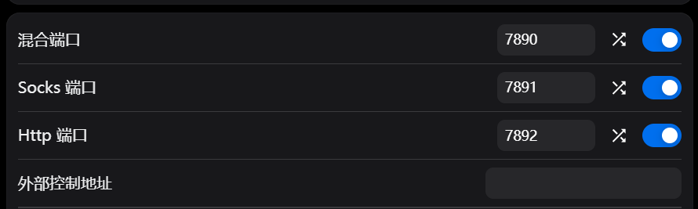
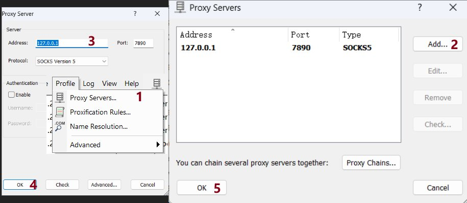
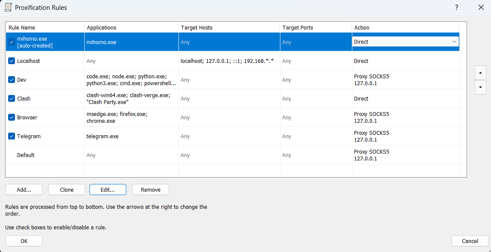
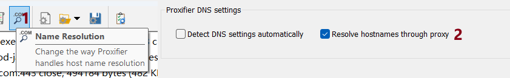
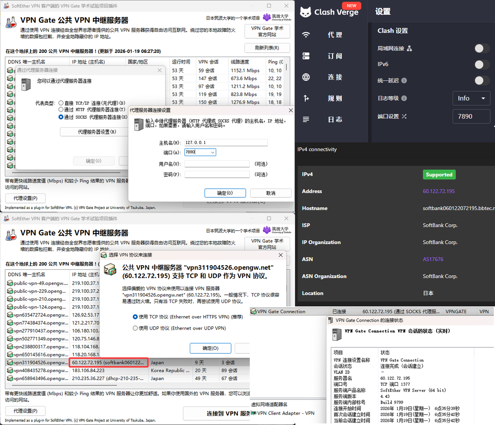
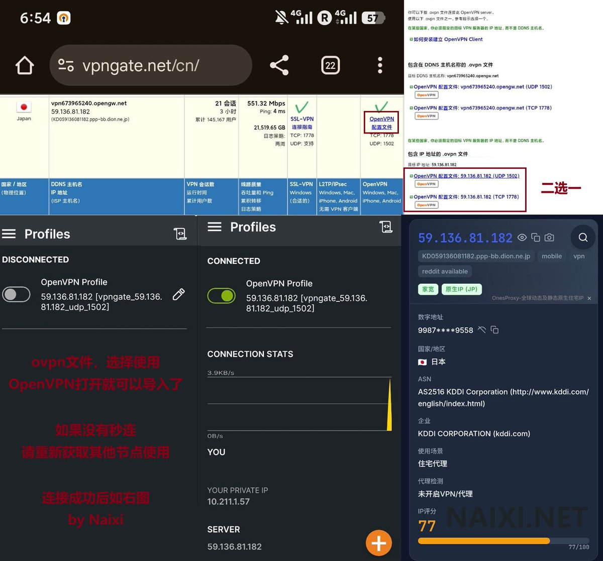

之前分享了Clash+VPNGate实现日韩家宽自由，需要关闭Clash的系统代理、仅作为跳板，本质上是由SoftEther的虚拟网卡提供了TUN。
这个127.0.0.1:7890其实可以借助Proxifier代理进程，先在Proxifier中添加一个proxy server，选socks5。
也是借助Clash作为socks5服务器，由Proxifier代理进程。如图2添加proxification rules，需要科学上网的程序，比如什么cursor.exe, code.exe（也就是vscode），Chrome.exe，node.exe（vscode插件，Codex，ClaudeCode等）等全放到applications里，并且action就选刚才配的proxy socks5服务器。别忘了让Clash自己走direct！
最后勾选图4这个Passthrough Proxy，这样就不需要开Clash的TUN/System Proxy了。

这个127.0.0.1:7890其实可以借助Proxifier代理进程，先在Proxifier中添加一个proxy server，选socks5。
也是借助Clash作为socks5服务器，由Proxifier代理进程。如图2添加proxification rules，需要科学上网的程序，比如什么cursor.exe, code.exe（也就是vscode），Chrome.exe，node.exe（vscode插件，Codex，ClaudeCode等）等全放到applications里，并且action就选刚才配的proxy socks5服务器。别忘了让Clash自己走direct！
最后勾选图4这个Passthrough Proxy，这样就不需要开Clash的TUN/System Proxy了。






0基础纯小白科学上网喂饭级教程：不要钱就能实现海外家宽IP（搞不定欢迎你私信我）
相信你人都上𝕏了，那肯定具备了科学上网的基础。今天分享的是VPNGate，它是日本筑波大学研究生院的一个学术实验，基于SSL VPN软件SoftEther VPN的一个插件。
https://t.co/waKjRuhwDT https://t.co/vbXvOXMwiA
相信你人都上𝕏了，那肯定具备了科学上网的基础。今天分享的是VPNGate，它是日本筑波大学研究生院的一个学术实验，基于SSL VPN软件SoftEther VPN的一个插件。
https://t.co/waKjRuhwDT https://t.co/vbXvOXMwiA